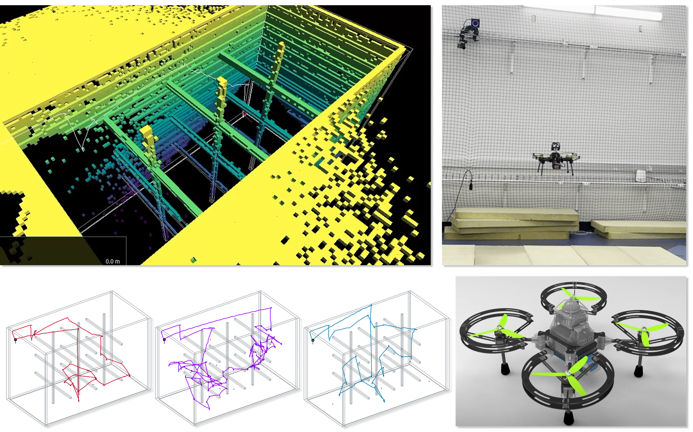

Autonomous Exploration Drones
Graduate Researcher · Carnegie Mellon University · Aug 2025 ~ present
Skills
Overview
Drones can map large excavation pits, spot wall defects and track soil removal, but most autonomous exploration planners are built for flat indoor spaces. At CERLAB, I’m building a learning-based planner that picks the drone’s next waypoints, and a 360° camera tracker for avoiding dynamic obstacles, with the goal of validating in large, GPS-denied underground construction sites.
Being quite new to RL-based planning, I built a baseline understanding by drawing parallels with my past work with classical planners. I also learned to deconstruct a policy by isolating one input at a time, to build an intuition for how inputs, training rewards and the resulting behavior connect. As I learn more, I’m getting better at forecasting potential problems, whether it’s for designing training objectives or new strategies for optical flow.
This project has also been a great opportunity to design human-robot interaction for autonomous robots. I think it’s remarkable how the methods behind autonomous robots are deeply technical, but the high-level behavior people observe is much more abstract and human-like: the drone can look slow, or even confused.
Using my past experience in UI/UX design and other robotics projects (e.g. the status indicators for PHIL-UP), I’m also building control interfaces and on-drone indicators to help other lab members and our industry sponsors better understand what the drone is doing as it explores.
What I’m doing
1) Building a graph-attention 3D exploration planner
Our group currently uses a classical next-best-view (NBV) planner. It samples a roadmap, checks for collisions and chooses where to go by ranking predicted information gain. In large 3D pits this runs into two problems:
- Vertical space needs 10–20 sampling layers instead of the 1–3 a corridor needs. That inflates the node count and the planning time.
- Hand-tuned scoring weights tend to overfit to one site and don’t carry over well to others.
Approach: A deep-RL exploration planner with graph attention, extended from ARiADNE (2D) to 3D. As in NBV, the sensors build an occupancy map with candidate nodes. To prune vertical nodes, I limit how many nodes each column gets based on the expected frontier height. Each node carries its relative position, its utility (how much unexplored frontier it can see), whether it has been visited and how much free height it thinks the column has based on occupancy. A learned policy then chooses the next viewpoint and explores the space.
Training: A voxel simulator on randomized 3D worlds that are ~130 × 100 m, with terraced corridors, rooms and stacked levels so the drone has to constantly change height. I’m using existing 2D weights as a starting point and will later train from scratch.
Early results: The first policy got stuck in loops in more than half of the evaluation worlds. It turned out the policy ignored small leftover pockets near the bottom of corners it had already visited, which kept the utility of some nodes above zero near the end of the run. I added a cutoff, and after troubleshooting similar minor issues, I was able to run an early baseline on some excavation environments against the NBV planner I had adapted for 3D earlier in the semester. In 2 environments with 4 trials each, the learned planner reliably explored faster (up to twice as fast), but its paths were actually longer in most runs.
2) A 360° camera + lidar obstacle tracker
To improve coverage when the drone descends in a pit, I modified our drone with a tilted lidar (Livox Mid-360, 23° pitch), but this leaves a blind spot behind the drone for dynamic obstacles. To cover it, I’m experimenting with a 360° camera (Insta360 X5) using optical flow to flag moving obstacles. This is also early work to see if we could eventually fly with only vision, using flow + learned depth.
To test against different obstacles, I built a set of simulated scenarios: fast movers, swinging machinery, and people partly hidden behind pillars.
Early issues: Slow walkers (0.5–1 m/s) were consistently harder to flag because they barely move between two frames. I added a longer, 1-second comparison window, and after troubleshooting false flags that came from overly large distance windows, detection of slow crossings (not radial) went from ~50% to ~90% for a drone moving at 1 m/s.
As expected, objects moving straight toward or away from the camera barely shift in the image, so they give very few cues to track. For the front side, I’m able to fuse with the lidar (using 0.5 s of pooling to get a denser cluster), which improved detection of people moving toward the drone. This also helped filter out false detections of an obstacle’s shadow. For the back side, I’m looking at small sideways movements, similar to insects, to induce parallax.
So far I’ve focused on detection methods that are light on computation. I’ll later be looking at learned depth models (Depth Anything 3, DAP) to estimate range behind the drone.